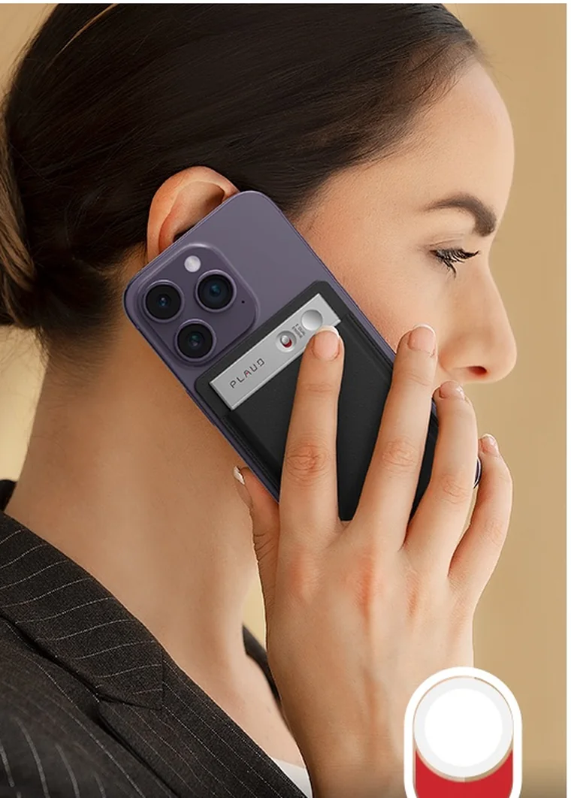

Co kdybyste při každém rozhodnutí měli po ruce všechny důležité souvislosti?
Odpovědi na důležité otázky ve firmě většinou existují. Jen nejsou na jednom místě a s časem se z nich vytrácí to nejcennější, tedy souvislosti.
Proč klient při posledním jednání změnil názor?
Co jeho reakci předcházelo?
Nezazněl dříve detail, který by dnes změnil naše rozhodnutí?
Odpovědi na podobné otázky ve firmě často existují. Jen nejsou na jednom místě.
Část informací zůstane v zápisu ze schůzky, část v e-mailu a něco se uloží do CRM. Mnoho důležitých souvislostí ale zazní pouze během rozhovoru. Když se k tématu po několika týdnech nebo měsících vrátíte, bývá obtížné zjistit, co přesně se stalo a proč.
Do systému se často zapíše konečný výsledek. Cesta, která k němu vedla, se postupně vytratí.
Co kdybyste při dalším rozhodování nemuseli pokaždé začínat od nuly?
Důležité rozhovory lze zachytit přímo tam, kde přirozeně vznikají.
Nahrávkou to teprve začíná
Pomocí zařízení nebo aplikace lze zachytit vybrané schůzky, hovory a další situace, během kterých vznikají důležité firemní informace.
Samotná nahrávka má ale omezenou hodnotu. Pokud chcete najít konkrétní informaci, musíte vědět, ve kterém rozhovoru zazněla, a záznam si znovu poslechnout. Přepis hledání usnadní, ale pořád pracujete pouze s jedním rozhovorem.
Inteligentní paměť je o úroveň výš. Je jako zkušený kolega, který zná historii tématu a ve správnou chvíli připomene důležité souvislosti.
Zachycené informace průběžně propojuje s předchozími rozhovory, rozhodnutími a zkušenostmi. Díky tomu nepracuje jen s tím, co zaznělo naposledy, ale také s kontextem, který se ve firmě vytvářel delší dobu.
Pokud klient při poslední schůzce změní svůj požadavek, můžete dohledat, jak se jeho potřeba postupně vyvíjela. Pokud tým řeší známý problém, inteligentní paměť může připomenout podobnou situaci a ukázat, jaký postup se tehdy osvědčil. A když nový kolega potřebuje pochopit důvod staršího rozhodnutí, nemusí se spoléhat pouze na stručnou poznámku v systému.
Nejde jen o to vědět, co zaznělo
Důležité informace mají hodnotu až ve chvíli, kdy je dokážete použít.
Inteligentní paměť proto nehledá pouze jednotlivá slova nebo věty. Pracuje s dostupným kontextem a pomáhá odpovídat na otázky, které se týkají vývoje situace, předchozích rozhodnutí a zkušeností firmy.
Můžete se například zeptat:
Co klient během předchozích jednání skutečně požadoval?
Kdy se jeho postoj změnil a co tomu předcházelo?
Řešili jsme už někdy podobnou situaci?
Jaký postup se nám v minulosti osvědčil?
Které požadavky se v rozhovorech opakují?
Jaký další krok dává podle dostupných informací smysl?
Odpověď pak nemusí vycházet pouze z jednoho zápisu. Inteligentní paměť může pracovat s více zachycenými situacemi a ukázat souvislosti, které by při běžném hledání zůstaly skryté.

Osobní jednání i telefonní hovor zachytí stejné zařízení. Inteligentní vrstva z nich vytvoří kontext, který lze později znovu využít.
Co může inteligentní paměť přinést vaší firmě?
Pět oblastí, ve kterých se rozdíl mezi uloženou nahrávkou a použitelným kontextem projeví nejdřív.
Odpovědi z vlastní firemní historie
Nemusíte ručně procházet staré zápisy, e-maily a různé systémy. Položíte otázku a získáte odpověď založenou na informacích, které se firma rozhodla zachytit.
Součástí odpovědi může být i původní kontext, ze kterého vychází. Snadněji tak ověříte nejen výsledek, ale také to, co mu předcházelo.
Souvislosti napříč rozhovory
Jeden rozhovor často nedává úplný obraz. Požadavky se mění, rozhodnutí se vyvíjejí a nové informace mohou změnit význam toho, co zaznělo dříve.
Inteligentní paměť pomáhá tyto změny sledovat. Může upozornit na opakující se téma, rozdíl mezi původním a současným požadavkem nebo zkušenost, která souvisí s právě řešenou situací.
Doporučení založená na dostupném kontextu
Pokud firma podobnou situaci řešila v minulosti, inteligentní paměť může tuto zkušenost připomenout a využít ji při návrhu dalšího postupu.
Nejde o nahrazení lidského rozhodování. Člověk stále posuzuje situaci a nese odpovědnost za konečný krok. Má ale k dispozici více relevantních informací a nemusí začínat pokaždé od nuly.
Know-how, které ve firmě zůstává
Zkušenosti často zůstávají spojené s konkrétními lidmi, projekty nebo obdobími. Při změně role, předání klienta nebo nástupu nového kolegy se část kontextu ztratí.
Inteligentní paměť pomáhá zachovat důvody rozhodnutí, vývoj vztahu s klientem i praktické zkušenosti z předchozí práce. Nový kolega tak nemusí pouze zjistit, co se udělalo. Může pochopit i proč.
Každý další rozhovor rozšiřuje firemní kontext
Běžná nahrávka zachycuje jeden okamžik. Inteligentní paměť se postupně rozšiřuje.
Nová schůzka může doplnit starší informace, potvrdit předchozí předpoklad nebo ukázat, že se situace změnila. Čím více relevantních zkušeností firma zachytí, tím lépe lze její historii využít při další práci.
Postupně tak vzniká znalostní vrstva, která pomáhá udržovat kontinuitu napříč klienty, projekty i týmy.
Firma se nemusí spoléhat pouze na to, co se podařilo zapsat bezprostředně po schůzce. Může se vracet i k důvodům, reakcím a souvislostem, které při běžném zápisu často chybějí.
Kontext nevzniká jen na obchodních schůzkách. Často zazní i na interní poradě nebo při předávání zkušeností.
Není potřeba zaznamenávat všechno
Inteligentní paměť nemusí od prvního dne pokrývat celou firmu ani každý rozhovor.
Lepší je začít tam, kde se dnes ztrácí nejvíce hodnotného kontextu. Může jít například o obchodní schůzky, předávání klientů, servisní návštěvy, projektová rozhodnutí nebo interní porady.
Pro vybraný proces lze určit:
které situace má smysl zachytit
kdo má mít k informacím přístup
jaké odpovědi a výstupy firma potřebuje
kam se mají důležité informace předávat
ve kterých chvílích má inteligentní paměť člověka podpořit
Začít lze jedním týmem a jedním konkrétním scénářem. Podle výsledků se pak rozhodne, zda a kam má smysl paměť rozšířit.
Zařízení je vstup. Hodnota vzniká při dalším využití informací
Zařízení usnadňuje zachycení rozhovorů během běžného pracovního dne. Nemusí být hlavním systémem, ve kterém bude firma informace později hledat nebo zpracovávat.
Skutečný přínos vzniká propojením zachycených informací, inteligentní vrstvy a systémů, které už firma používá.
Podle vybraného scénáře lze nastavit, jak se mají rozhovory zpracovat, jaké informace z nich mají vzniknout a kam se mají předat. Firma tak nezíská pouze nové zařízení, ale použitelný způsob, jak uchovat a využívat vlastní zkušenosti.
Kde vám inteligentní paměť pomůže?
Prohlédněte si konkrétní scénáře z různých oborů, od klientských rozhovorů a terénních návštěv až po odborné konzultace a předávání zkušeností.
Pokud už víte, ve kterém procesu se vám důležité informace ztrácejí, můžeme ho společně projít na nezávazné konzultaci.